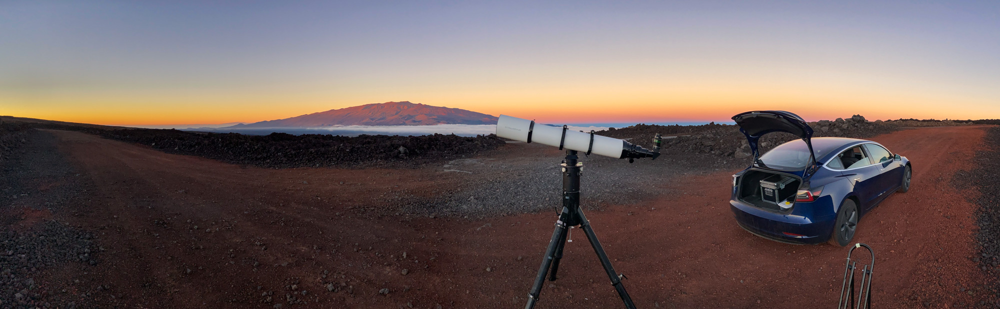
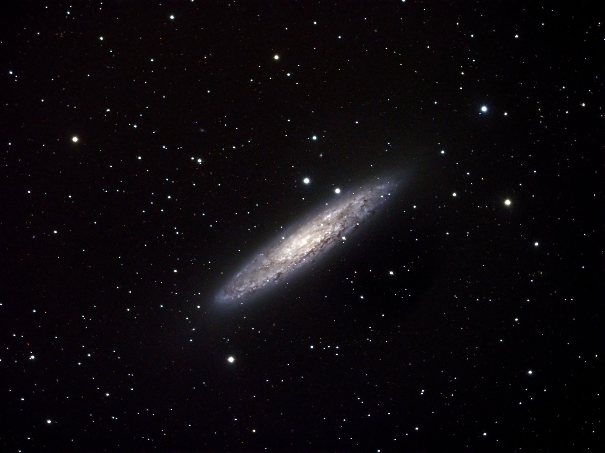

I got out for two short observing sessions this new moon period. The first was Friday night, it was a short session, just a couple of hours of dark time, but conditions were great. I went to one of the pullouts off of the Mauna Loa Access Road and there was no wind and the clouds were well below the saddle level.

The telescope ready for a night of observing.
Friday Night
The seeing wasn't great, so I stuck to deep sky objects for observing. I worked through an observing list of DSOs in Sculptor. This is a constellation I'd overlooked when observing from more northern latitudes since it does not rise very high from there, but Sculptor has several nice deep sky objects within its borders.
The highlights for me included NGC 253, the famous "Sculptor Galaxy" an edge on galaxy with what looks like texture due to myriad dust lanes. I'd imaged NGC 253 back in 2007 shortly after I'd moved to the island.

An image of NGC 253 which I took in 2007 from the Visitor Information Station on Maunakea. This was imaged using an SBIG ST-2000XM CCD with LRGB filters on a Stellarvue SV102ABV refractor with a total exposure time of 2.75 hours.
The nearby NGC 288 globular cluster is another lovely object which yielded lots of resolution in my 13mm eyepiece in the SVX152 refractor. NGC 300, a large face on galaxy with hints of spiral arms, and NGC 55, a large edge on galaxy were nice finds as well.
I finished the night just after 9pm (about 2 hours after the end of astronomical twilight), by visiting some old friends in Perseus: NGC 1333, Barnard 1, and IC 348 which are part of the Perseus Molecular Cloud complex which was the region I studied for my PhD dissertation. None are dramatic in the eyepiece: NGC 1333 is a reflection nebula which appears as a faint haze around a star, Barnard 1 is a dark nebula which shows up as a field devoid of bright stars, and IC 348 is a small dense open cluster next to the bright star Atik.
A few months ago, a friend of mine, Jon Talbot had posted an image he took of the region around NGC 1333 which reminded me that I had imaging data from the Mayall 4 meter telescope on Kitt Peak. I sent it to him and he processed it in to a gorgeous color image.
Saturday Night
On Saturday, I went for another observing session. The weather was less cooperative this time. The clouds were higher and were alternately covering and clearing at the pullout I used the night before, so I was forced to head up the road a little higher. Unfortunately, the wind was also an issue higher up the mountain. It varied a bit, but was a steady 10-12 mph most of the night with gusts in the 15-18 mph range. It seemed to pick up a bit as the night went on as well. This severely limited high power observing and at times made even moderate magnifications difficult due to wind shake.
My list of this night was DSOs in Cepheus. Being in the galactic plane, many of these were diffuse nebulae. While generating observing lists for the SVX152, I put a magnitude cap on objects of 12. This is well within in the range of the scope, but it varies depending on the morphology of the object. A small 12th magnitude galaxy or planetary nebula has all of its light packed in to a small area, so it is comparatively easy to pick out. The huge emission nebulae in Cepheus were a challenge to pick out visually because their light is spread thinly over such a large area. Most of the large diffuse nebulae in my notes were identifiable due to the dark areas they are embedded in, with a few having visible nebulosity.
One nice find in Cepheus was NGC 40, a compact planetary nebula with a bright central star.
As I've mentioned before, I've not found nebular filters all that useful from truly dark sites. Most of the objects in this list supported that conclusion. A few, like the Cave Nebula, did get enhanced slightly with a UHC, but were not dramatic improvements.
With that in mind, I took a look at a few large nebulae around the sky to revisit this. One early stop was the Veil Nebula in Cygnus as it was setting. This object is notorious for being helped by an OIII filter. Sure enough, the OIII filter significantly improved the view. Though the nebula was very low on the horizon, so the excess sky glow down there probably made the improvement with the filter more that it would have been if it were higher up. The North American Nebula (also in Cygnus) was similarly improved by a UHC filter, but somewhat less dramatically so. I also checked out the Flaming Star Nebula in Auriga (which was rising), the UHC helped a bit there.
One other very diffuse object I tried was the Horsehead Nebula in Orion. The nearby Flame Nebula was easy to make out and I could easily see the dark lanes which help give it the characteristic flame shape. The Flame Nebula was not improved by a filter, in fact the unfiltered view was significantly better. Moving on to the Horsehead, I was just able to make out the bright nebula as an area of slightly increased background. Using nearby stars as a guide and concentrating, I was able to see a dark notch in the bright nebula at the right place and was able to get hints of the shape. Again, the unfiltered view was a bit better to my eye.
During the Saturday observing session, a friend of mine, Olivier Guyon, was set up nearby observing with his 14 inch Celestron and showing a few of his colleagues objects in the telescope. At one point, I overheard him talking about Andromeda and giving a tour of its numerous satellite galaxies. This reminded me that I'd been meaning to try to see G1, the brightest globular in the Andromeda Galaxy. I pulled it up on SkySafari. At magnitude 13.7, it was significantly fainter than what I'd been going after in recent nights, but since it would be a compact object, it should be doable in the SVX152. With a little work matching star patterns to verify the field, I was able to pick it out as a faint "star". Unfortunately, there was too much wind shake to tell if it was point-like or if appeared non-stellar. That was a highlight for me, I'd never seen a globular cluster in a different galaxy before.
The weather forecast for Saturday has been marginal, predicting a chance of fog for the summits. That was one reason I'd made sure to head out on Friday, so I would get at least one night in. Fortunately, Saturday's weather was good enough for us to observe. While the summits were clear, I could see a layer of fog and cloud clinging to both Maunakea and Mauna Loa at high elevations. Shortly after 10pm, those clouds swung over us and blocked our view. The wind had also increased, so that concluded the observing session and we packed up and left.